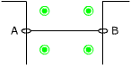
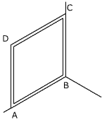
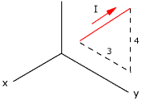

Por un conductor colocado a lo largo del eje
x circula una corriente de 50 A en el sentido de x decreciente y existe
un campo magnético de 2 T según el semieje z+ . Calcula
la fuerza por unidad de longitud que experimenta el conductor

El conductor AB, longitud
25 cm y masa 50 g, puede deslizar por las guías verticales
manteniendo el contacto eléctrico con un generador. Dicho
conductor está dentro de un campo magnético de 1.33
T horizontal y perpendicular a él.
Determina la corriente necesaria para hacer 'flotar' al conductor

Por la espira cuadrada,
de lado 30 cm, circula una corriente de 20 A en sentido ABCD. Calcula
el torque sobre la espira cuando esta se somete a un campo magnético:
a) B = B0 i b)
B = B0 j c)
B = B0 k
Dato: B0 = 0.05 T

El segmento conductor de
la figura transporta una corriente de 1.8 A y se encuentra dentro
de un campo magnético B = 1.2 T k. Determina la fuerza a
que está sometido.
Las distancias están dadas en cm